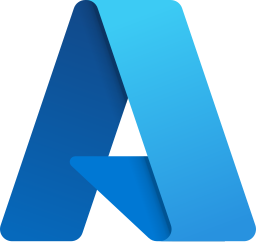
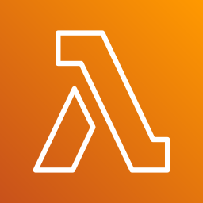
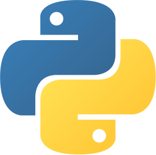
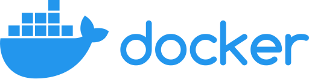

Who I Am
A top-1% technologist and hands-on architect who turns cloud, AI, and cybersecurity investment into measurable business outcomes. I design and deliver enterprise systems end-to-end — from strategy and reference architecture through build, security, and run — and take them MVP → pilot → enterprise (Tier-4/5) across Azure, AWS, GCP, Anthropic Claude, and the open-source stack.
- Top-1% technologist, 34 years turning cloud, AI, and cybersecurity investment into measurable enterprise value; 20+ years in architecture and executive leadership, trusted by boards and C-suites across banking, insurance, government & defense, healthcare, retail, legal, and 10+ regulated industries.
- Multi-cloud at scale — Azure, AWS, Google Cloud, Oracle, IBM, Alibaba, DigitalOcean: 99.99% uptime across 5,000+ VMs and 1,000+ physical servers, 35% OpEx reduction and 40% cloud-spend savings through FinOps and enterprise vendor negotiation (Microsoft EA, AWS EDP, VMware ELA).
- Production agentic & generative AI — Claude, OpenAI, Gemini, DeepSeek, Llama, Amazon Nova: model-agnostic orchestration, end-to-end RAG, and multi-agent systems (MCP, A2A), including a 40,000-SKU intelligent recommendation engine hardened with responsible-AI guardrails and human-in-the-loop governance.
- AI-native Zero Trust security — mean time to respond cut 82% (4 hrs → 45 min), credential-theft incidents down 92%, and zero regulatory or audit findings across ISO 27001, SOC 2 Type II, and PCI-DSS for 3+ consecutive years.
- Enterprise consolidation without business interruption — 2M+ Active Directory objects migrated at zero downtime, 10,000+ users to Microsoft 365 with zero data loss, and 500+ servers plus legacy email estates modernized to cloud-native.
- Board-level P&L accountability — 50+ technical staff and $5M+ annual budgets managed, $15M+ revenue enabled, and $2M+ licensing recovered.
- Proven global delivery — 42+ clients across 8 countries and 3 continents, spanning financial institutions, government & defense, healthcare, insurance, retail, and MSP/MSSP partners.
- Founder & operator — Founder/CEO of Alfalah, an AI career-intelligence SaaS serving 195 countries; Fractional CTO engagement; Winner, Microsoft AI Innovation Hackathon 2025.
- Engagement models — full-time executive/architect, fractional or interim CTO · CIO · CISO, or trusted technical advisor to founders, boards, and portfolio companies.
Flagship Solutions — How They Work, End to EndReal compound platforms that wire many reference architectures into one delivered system. Click any card for the full documentation.

Microsoft Foundry — Enterprise AI Agent & Knowledge Platform AzureBusiness need: Run 45+ retail stores on trusted AI over a 40,000-SKU catalog, with no vendor lock-in and full governance.
flowchart LR S["Sources
catalog · docs · voice · images · IoT"] --> ING["Ingest
Data Factory · Event Hubs · Durable Functions"] ING --> LAKE["Fabric / OneLake
Bronze→Silver→Gold · Databricks"] LAKE --> IDX["AI Search
embeddings · hybrid · skillsets"] IDX --> FDRY["Microsoft Foundry
Agent Service · Models · MCP/A2A"] FDRY --> GUARD["Responsible AI
Content Safety · LLM-as-judge · human-in-loop"] GUARD --> GW["Azure OpenAI Gateway
monitoring · custom Entra auth"] GW --> APP["Store apps · voice agent · copilots"] FDRY --> OBS["Observability
App Insights · Langfuse"] GOV["Governance
Agent 365 · Purview · Policy"] -.-> FDRY MLO["MLOps
Azure ML · MLflow · Model Registry"] -.-> FDRY
 Tier-4 Generative-AI SaaS on Bedrock + SageMaker AWS
Tier-4 Generative-AI SaaS on Bedrock + SageMaker AWS
Business need: A scalable, secure multi-tenant SaaS with differentiated AI guidance and board-level reliability.
flowchart LR U["Users / tenants"] --> CF["CloudFront + WAF / Shield"] CF --> API["API Gateway · Lambda · EKS / Fargate"] API --> DATA["Aurora · DynamoDB · S3 · OpenSearch (vector)"] API --> BR["Amazon Bedrock
AgentCore · Knowledge Bases · Guardrails"] BR --> MODELS["Claude · Amazon Nova"] DATA --> BR BR --> SM["SageMaker
Pipelines · Model Registry · Feature Store"] DATA --> AN["Analytics
Glue · Athena · EMR · Kinesis · Redshift · QuickSight"] SEC["IAM Identity Center · GuardDuty · Security Hub · KMS · Control Tower"] -.-> API API --> OBS["CloudWatch · X-Ray · Datadog"]

Lambda Gemini Enterprise Agent Platform Google Cloud
Gemini Enterprise Agent Platform Google Cloud
Business need: A governed, full-lifecycle multi-agent platform with enterprise data and search.
flowchart LR SRC["Enterprise data · docs · media"] --> ING["Dataflow · Pub/Sub · Dataproc"] ING --> BQ["BigQuery + BigQuery ML · Dataplex · AlloyDB"] BQ --> VS["Vertex AI Vector Search"] VS --> AGP["Gemini Enterprise Agent Platform
Agent Studio · Registry · Runtime · Memory Bank"] AGP --> MODELS["Gemini 3.1 · Gemma 4 · Model Garden"] AGP --> SIM["Agent Simulation
quality gates"] AGP --> SVC["Apps · Contact Center AI · Dialogflow CX"] SEC["Chronicle SIEM · Security Command Center · BeyondCorp"] -.-> AGP AGP --> DEL["Apigee · Cloud Build · Anthos (GKE / Cloud Run)"]
 Enterprise Agentic AI Suite (vendor-agnostic Claude) Anthropic
Enterprise Agentic AI Suite (vendor-agnostic Claude) Anthropic
Business need: Safe, portable agent operations that run identically across every cloud.
flowchart LR USERS["Employees · customers · developers"] --> ORCH["Orchestration
LangGraph · CrewAI"] ORCH --> GW["LiteLLM gateway"] GW --> CLAUDE["Claude Opus 5 · Sonnet 4.6 · Haiku"] CLAUDE --> MCP["MCP servers · tools · subagents"] MCP --> SYS["Enterprise systems & data"] CLAUDE --> PROD["Claude Code · Cowork · Science · Voice Mode · Skills"] CLAUDE --> OBS["Langfuse · Arize Phoenix"] RUN["Runs on: AWS Bedrock · Google Vertex AI · Microsoft Foundry"] -.-> CLAUDE

Sovereign RAG, Agent & MLOps Platform Open SourceBusiness need: A self-hostable, vendor-neutral AI platform (powers Alfalah across 195 countries at 50× lower cost).
flowchart LR SRC["Documents · APIs · user data"] --> EMB["Embeddings"] EMB --> VDB["Vector stores
Qdrant · Weaviate · Milvus · pgvector · FAISS"] VDB --> RAG["RAG + agents
LangChain · LlamaIndex · Haystack · DSPy"] RAG --> SERVE["Serving
vLLM · Triton · KServe · Ollama · llama.cpp"] SERVE --> APP["Apps / APIs (FastAPI · Next.js)"] RAG --> GW["Gateways
LiteLLM · Portkey · OpenRouter"] MLO["MLOps
MLflow · Kubeflow · W&B · DVC · ZenML"] -.-> RAG OBS["Observability
Langfuse · Arize Phoenix · LangSmith"] -.-> SERVE K8S["Kubernetes · Docker · Helm"] -.-> SERVE

Kubernetes · DockerCapability Areas
AI & Agentic AI
Microsoft Foundry, Amazon Bedrock, Gemini Enterprise, Claude; RAG, multi-agent (MCP/A2A), MLOps/GenAIOps, vector search, model serving, LLM observability, AI gateways, Responsible AI.
Cloud & Multi-Cloud
Azure · AWS · GCP · Oracle · IBM; landing zones, hybrid (Azure Local/Arc), Kubernetes, IaC (Terraform/Bicep), FinOps, petabyte-scale migration.
Cybersecurity & Zero Trust
SIEM/SOAR, XDR/EDR, IAM/PAM, CNAPP, SASE, microsegmentation, MITRE ATT&CK/D3FEND, ISO 27001 / SOC 2 / PCI-DSS / HIPAA.
DevOps · SRE · Platform
CI/CD, GitOps, service mesh, chaos engineering, internal developer platforms, SLO/SLI/SLA, observability, DevSecOps.
Data & Analytics
Microsoft Fabric, Databricks, Synapse, BigQuery, Snowflake; lakehouse/medallion, streaming, ETL/ELT, DataOps.
Leadership & Advisory
Fractional CTO/CIO/CISO, board advisory, P&L, $5M+ budgets, 50+ staff, vendor negotiation, digital transformation.
Career at a Glance
Principal Cloud, Systems & AI Security Architect — Retail Enterprise Client (45+ locations)
Modernized a 45-location retailer into a secured AI-enabled Azure hybrid estate: Foundry agent platform, 40k-SKU RAG, Zero-Trust SOC, hybrid datacenter & DR, edge robotics (Physical AI).
Fractional CTO — SaaS Platform Client
Board-level cloud/AI/security leadership; Tier-4 AWS SaaS with Amazon Bedrock + Claude; cross-cloud governance.
Founder & CEO — Alfalah
AI career-intelligence SaaS, 195 countries, 19 modules; open-source RAG/agent platform at 50× lower cost.
Senior Solution Architect | SRE — Enterprise IT Services Provider
Multi-cloud landing zones, Kubernetes/GitOps, SIEM/XDR, BCDR, MLOps; MTTR −82%, reliability 98.5%→99.99%.
Senior Systems Architect — Legal & Financial Services Firm
Hybrid multi-cloud, virtualization, security & M365 for legal/financial clients; zero-compromise modernization.
Senior Cloud Architect (from Sys Admin) — Carrier-Neutral Colocation Provider
Carrier-neutral colocation for top ISPs; migrated 5,000+ VMs to cloud; mainframe/legacy modernization — the 34-year backbone.
Skills, Platforms & Technology Stack
☁️ Cloud & Multi-Cloud
Microsoft Azure, AWS, GCP, Oracle Cloud, IBM Cloud, Alibaba Cloud, DigitalOcean, Vultr, Heroku; landing zones, Cloud Adoption & Well-Architected Frameworks, Azure Arc, Migrate; FinOps, Virtual WAN, hub-spoke, Shared VPC, Workload Identity.
AWS AI & Cloud
Bedrock (AgentCore, Knowledge Bases, Guardrails), Amazon Nova, Q & Q Developer, SageMaker (Studio, Pipelines, Feature Store), Rekognition, Polly, Transcribe, Comprehend, Textract, Kendra; EC2, EKS/Fargate, Lambda, S3, RDS/Aurora, DynamoDB, Redshift, API Gateway, Control Tower, GuardDuty.
Google Cloud AI & Core
Gemini Enterprise Agent Platform, Google ADK, Gemini 3.1/Flash, Gemma 4, Vertex AI, Document/Vision/Video AI, Speech-to-Text; Compute Engine, GKE, Cloud Run, BigQuery & BigQuery ML, Dataflow, Dataproc; Chronicle SIEM, BeyondCorp.
AI Models & Agent Frameworks
Anthropic Claude, OpenAI GPT, Google Gemini, DeepSeek, GLM, Kimi, Llama, Mistral, Cohere; Microsoft Agent Framework, Semantic Kernel, AutoGen, LangGraph, LangChain, LlamaIndex, Haystack, CrewAI, DSPy, Google ADK; MCP & A2A, multi-agent orchestration, LLM-as-a-judge, human-in-the-loop.
RAG, Vector Search & MLOps
RAG (embeddings, re-ranking, evaluation); Pinecone, Weaviate, Milvus, Qdrant, Chroma, FAISS, pgvector; Azure ML, MLflow, Kubeflow, Weights & Biases, Feature Store, AutoML; vLLM, Triton, KServe, Ray Serve, Ollama; PyTorch, TensorFlow, JAX, Hugging Face.
Observability & Responsible AI
Langfuse, Arize Phoenix, LangSmith, Helicone, OpenTelemetry; LiteLLM, Portkey, OpenRouter AI gateways; NIST AI RMF, ISO 42001, EU AI Act; content filters, safety evaluations, adversarial ML, model watermarking, Constitutional AI.
Data & Analytics
Microsoft Fabric & OneLake, Power BI, Azure Synapse, Databricks (Delta Lake, Unity Catalog), SQL Server (billion-row), Cosmos DB; AWS Glue/EMR/Redshift; BigQuery, Snowflake; T-SQL, KQL, DAX, PySpark; medallion & lakehouse architecture.
Cybersecurity & Zero Trust
Zero Trust (NIST 800-207); SIEM/SOAR (Sentinel, Splunk, QRadar); XDR/EDR (Defender, CrowdStrike, SentinelOne, Darktrace); IAM/PAM (CyberArk, BeyondTrust); CSPM/CNAPP; SASE (Zscaler, Netskope); MITRE ATT&CK/D3FEND; Confidential Computing, post-quantum cryptography.
Infrastructure & Virtualization
VMware vSphere/ESXi/NSX-T/VCF, Hyper-V, Nutanix AHV, Proxmox; Windows Server, Active Directory (multi-forest), Linux (RHEL, Ubuntu, SUSE), UNIX (AIX, Solaris); NetApp, Dell EMC, HPE, Pure Storage; Azure Local, Azure VMware Solution.
DevOps, SRE & Platform Engineering
Terraform, Bicep, ARM, Pulumi, Crossplane; Ansible, Puppet, Chef; GitHub Actions, GitLab CI/CD, ArgoCD, Flux; Kubernetes (AKS/EKS/GKE/OpenShift), Docker, Helm, Istio; Backstage, Port; Prometheus, Grafana, Datadog, ELK; SLO/SLI/SLA, Policy-as-Code.
Programming, Frameworks & Databases
Python, JavaScript/TypeScript, Java, C#, Go, Rust, PowerShell, Bash, SQL; .NET/ASP.NET Core, Spring, Django, FastAPI, React, Next.js, Node/Express; Oracle, SQL Server, PostgreSQL, MySQL, Cosmos DB, DynamoDB, MongoDB, Redis, Snowflake.
Networking, Identity & Migration/BCDR
Cisco/Juniper/Arista, BGP/OSPF, SD-WAN, IPsec/SSL VPN; Active Directory, Entra ID (Governance, Conditional Access), SAML/OAuth/OIDC, FIDO2, Okta, SailPoint; Azure Migrate/ASR, AWS MGN; Veeam, Commvault, Rubrik, Zerto.
Mail, DNS, web & messaging (legacy-to-modern): Exchange Server & Online, Postfix, Zimbra; BIND, PowerDNS; IIS, Apache, NGINX; Kafka, RabbitMQ; Elasticsearch, OpenSearch. ITSM & delivery: ServiceNow, Jira, Confluence, Scrum, SAFe, ITIL v4. Emerging tech focus: agentic & physical AI, confidential computing, post-quantum cryptography, quantum computing (Qiskit, Cirq), edge AI, GitOps, FinOps, GreenOps.
Leadership, Continuous Learning & R&D
Executive & Advisory
C-suite and board advisory, fractional CTO/CIO/CISO, technology strategy & digital transformation, enterprise architecture (TOGAF), cloud adoption strategy, P&L accountability, vendor negotiation, budgets $5M+, team leadership (50+ staff), M&A integration.
Consulting & Communication
Stakeholder management, trusted-advisor partnering, pre-sales & solutioning, discovery workshops, proposal/SOW writing, RFP response, cross-cultural delivery (8 countries, 3 continents), executive storytelling, mentoring & coaching.
Delivery & Critical Thinking
Systems thinking, problem decomposition, decision-making under ambiguity, risk management, prioritization, ownership & accountability, bias for action, adaptability & resilience, calm under pressure, incident command.
Continuous Learning & R&D
Disciplined upskilling from foundational systems to frontier agentic AI — home-lab experimentation, certification discipline, active community engagement. Current R&D: multi-agent orchestration, prompt engineering, LLM fine-tuning (LoRA/QLoRA), RAG evaluation, AI safety, post-quantum cryptography, federated learning.
Certifications
Microsoft: Azure Solutions Architect Expert (AZ-305), Azure Administrator Associate (AZ-104), Security Operations Analyst (SC-200), Identity & Access Administrator (SC-300), Information Protection Administrator (SC-400), Microsoft 365 Enterprise Administrator Expert, MCSE Cloud Platform & Infrastructure Charter Member (2016).
Microsoft AI (2026): AI-901 Azure AI Fundamentals; AI-103 Developing AI Apps and Agents on Azure; AI-300 Operationalizing ML and Generative AI Solutions; AI-500 Multi-Agent AI Solutions Expert.
AWS: Solutions Architect Associate & Developer Associate; Solutions Architect Professional, DevOps Engineer Professional, Security Specialty, Machine Learning, AI Practitioner, Generative AI Developer.
VMware, Security, Cloud & Data: VCP5/6/6.5-DCV; ISO/IEC 27001:2022 Lead Implementer (PECB); CompTIA Security+/Network+/Linux+/Cloud+; ITIL v4; ISC2 Certified in Cybersecurity; Google Cloud Professional Cloud Architect & Generative AI Leader; Azure Data (DP-300/420/600/700/900).
Anthropic / Claude (21 credentials, 2026): AI Fluency Framework & Foundations, Building with the Claude API, Claude Code in Action, MCP: Advanced Topics, Introduction to Subagents & Agent Skills, Claude with Vertex AI, Claude with Amazon Bedrock — among the earliest certified Claude/agentic-AI practitioners.
Education
Master's, Information Systems Security / Information Assurance — University of the People · Bachelor of Computer Science (BCS) — University of the People · Post Graduate Diploma, Software Engineering · Diploma, Software Engineering · Higher Secondary School Certificate, Pre-Engineering.
Awards & Recognition
Winner — Microsoft AI Innovation Hackathon (Nov 2025) · Charter Member — MCSE: Cloud Platform & Infrastructure (2016) · Early Practitioner — among the earliest cohort of certified Claude/agentic-AI practitioners (21 Anthropic credentials).
Roles Delivered & Target Titles
Executive & Advisory
CTO, CIO, CISO, Chief Architect, Chief Digital/Innovation Officer, VP/Head of Engineering, Cloud, Platform, Infrastructure, AI, or Security; Fractional/Interim CTO · CIO · CISO; Board & founder technical advisor.
Architecture
Principal/Enterprise/Solutions/Cloud/Systems/Security/Data/AI/Application/Integration/Infrastructure/Platform/Network Architect; Distinguished Engineer; Technical Fellow.
Engineering & Delivery
Principal/Staff/Senior Cloud, Infrastructure, Platform, DevOps, DevSecOps, SRE, AI/ML, GenAI, MLOps, Data, or Security Engineer; Director/Manager of Engineering, Cloud, Infrastructure, Platform, Security, or IT.
Titles apply across seniority (Associate → Senior → Staff → Principal → Lead → Manager → Director → VP → Head → Chief) and industries — banking, insurance, healthcare, government & defense, retail, telecom, SaaS/technology, energy, manufacturing, legal, and logistics — across North America.
Industries Served
Retail · Legal · SaaS & Technology · MSP/MSSP · Healthcare · Financial Services · Insurance · Real Estate · Transportation & Logistics · Telecommunications · Media & Entertainment · Hospitality · Pharmaceuticals · Automotive · Aerospace & Defense readiness · Government/Public-Sector readiness — delivered across 42+ clients, 8 countries, and 3 continents.